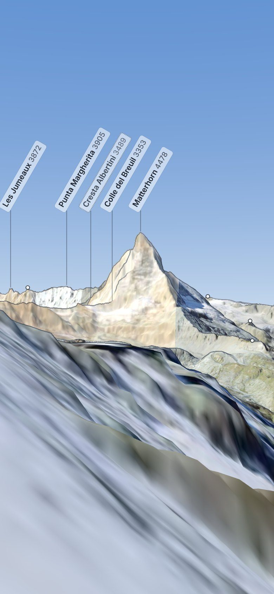
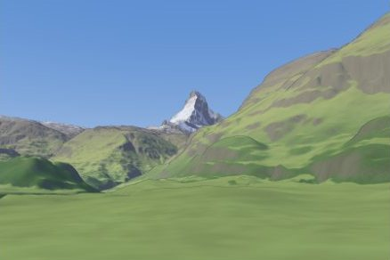
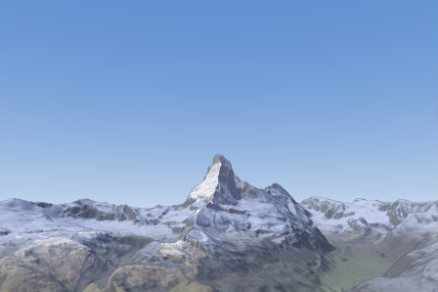
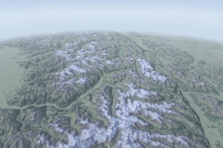
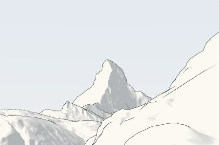
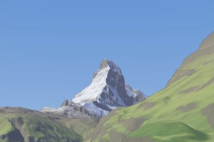
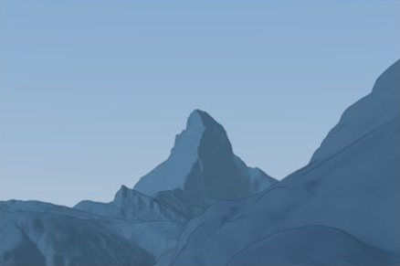

Perspective
L'app pour iPhone qui pose toute seule le nom des sommets sur l'image de la caméra ou sur une photo, puis vous fait monter au-dessus du sol pour comprendre le paysage en 3D.
En cours. Perspective est en cours de publication sur l'App Store. Les images de cette page viennent de la version de développement ; de nouvelles images suivront dans les prochains jours.

- Le nom de chaque montagne. Levez le téléphone vers les montagnes : l'app nomme les sommets et donne leur altitude, sur le relief dessiné ou sur l'image de la caméra.
- Ce qui se voit vraiment. L'app calcule quels sommets sont visibles depuis l'endroit où vous êtes, et lesquels sont cachés par un relief plus proche.
- Du sol au survol. Un curseur fait monter la vue en douceur, pour voir où se trouvent les sommets les uns par rapport aux autres.
- Vos photos aussi. Prenez une photo, l'app y pose les noms, et vous la gardez ou l'envoyez telle quelle.
- Rien d'autre. Pas de publicité, pas de commerces, pas de compte à créer. En français et en anglais.
Du sol au survol



Plusieurs façons de dessiner le relief



Disponibilité
Bientôt sur l'App Store, d'abord en Suisse.
Assistance
Une question, un sommet mal placé ? Écrivez à contact@sommerlabs.ch.